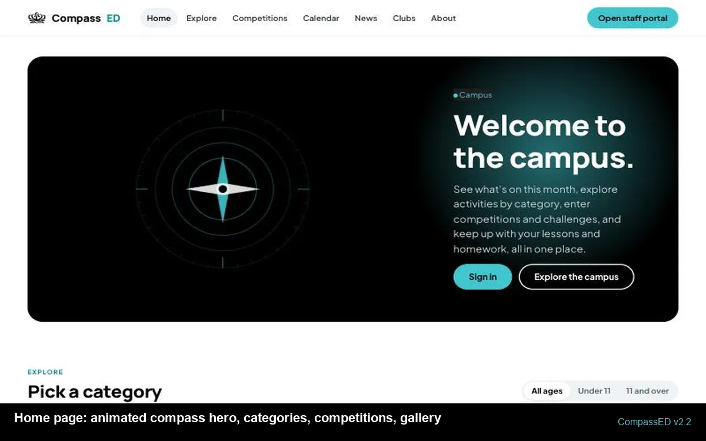

v2.629 October 2026 · current
The Campus Hub
Both portals gain a Campus Hub, in the spirit of Global Campus: Student Voice for ideas and votes with staff replies, a Student Showcase of winning work, a Culture & community page for houses and clubs, and a printable Digital Student ID. Staff get Campus Insights, a Student Voice inbox and a full-screen Display mode for classroom screens.
v2.529 October 2026
The compass transition
Moving between pages has one cinematic beat: the page blurs away under a dark veil while the compass needle spins up and settles on north, then the next page opens from the compass as the rose flies past. Inside the portals, routes swap with a quick blur-and-settle. The compass was designed in Moda; the motion is CSS, so it is sharp on every screen, never flickers, and is skipped entirely when your device asks for reduced motion.
v2.4.228 October 2026
Feedback button
Students and staff send a rating, a category and a message from the Feedback button in their portal. Only the administrator reads it, under Admin > Feedback. Also: the export badge is gone from every video.
v2.428 October 2026
Motion, in every corner
- The campus home page inside both portals, without signing out.
- "Welcome to campus" entrance, reveal-on-scroll sections, hover lifts, pressed buttons, smoother transitions.
- Ambient hero and sign-in loops designed in Moda.
- "Compass Ed" naming, ECA clubs, tighter spacing and layouts.

v2.328 October 2026
Codes, consent and connections
- Login codes in the form 1234-5678: unique, printable, revocable; a code creates an account or resets credentials.
- Admin dashboard for accounts, codes, calendar feeds and links; sign out any account everywhere.
- Privacy Policy, Terms of Service, Cookie Policy, consent form and cookie notice.
- Houses: North red, East green, South blue, West yellow.
- Global Campus and other calendars mirrored from their iCalendar feeds; Compass Dash XP, assignments, announcements and house cup inside Compass Ed.
- Artwork and this animated preview designed in Moda; logo contrast fixes.
v2.228 October 2026
Polish, directories and a content pack
- Student and staff portals now live at /student/ and /teacher/.
- Navigation simplified to seven grouped sections per portal, with sub-tabs.
- New graphics: animated compass hero, patterned category tiles, illustrated empty states.
- Starter content pack: 16 activities across every category, four competitions, five clubs, news and a launch event.
- This Versions page, with a changelog and animated previews from here on.
- Bug fixes to stale preview data, the hero eyebrow and several empty states.

v2.128 October 2026
Houses, clubs, uploads and accessibility
House points and leaderboards, badges, file uploads, parent summary links, clubs, newsletter builder, winners' gallery, age bands, question bank with CSV import, topics view, timed assessments, peer review, register and seating, offline support, search, and settings for dark mode, dyslexia-friendly reading, detail level and transparency.
v2.028 October 2026
A standalone campus
Own accounts, classes and content. Activity categories, competitions, news, calendar and announcements alongside the full schoolwork toolkit.
v1.028 October 2026
First build
Student and teacher portals with lessons, playlists, quizzes, mastery checkpoints, assignments with drafts and rubrics, a review queue, class heatmap, calendar and announcements.
The full log is in CHANGELOG.md.